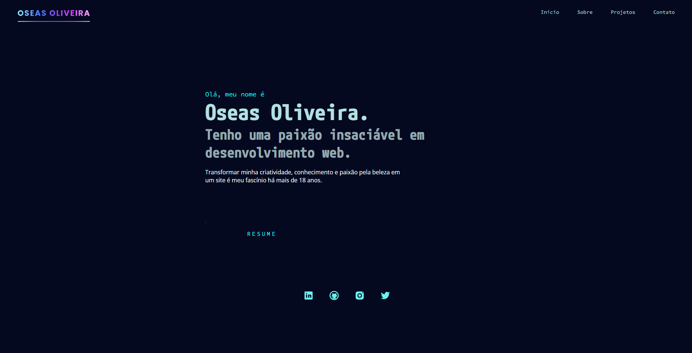
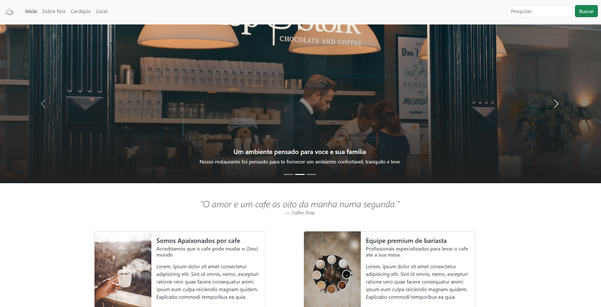
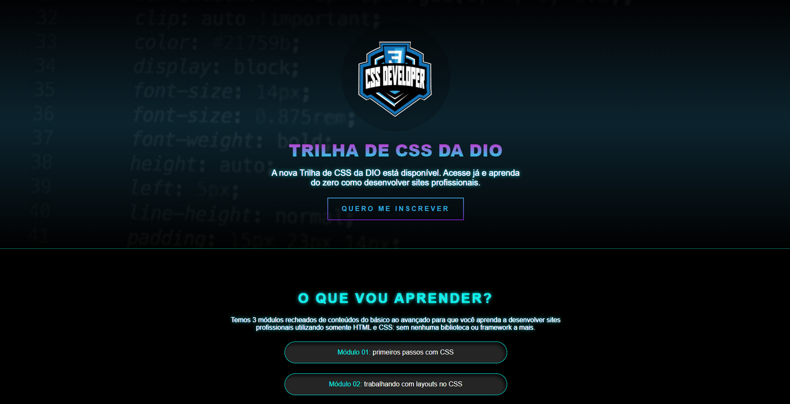
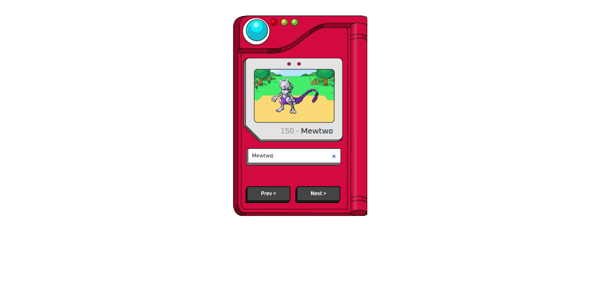

Olá, meu nome é
Oseas Oliveira.
Tenho uma paixão insaciável em desenvolvimento web.
Transformar minha criatividade, conhecimento e paixão pela beleza em um site é meu fascínio há mais de 18 anos.
Sobre mim
Eu sou um desenvolvedor web de Salvador, Bahia, e me esforço para
criar designs sucintos, elegantes e responsivos, para proporcionar a
melhor experiência possível aos usuários em qualquer website.
Minha primeira interação com tecnologia ocorreu por meio da minha
família, que sempre trabalhou na área de TI. Em 2005, tive meu
primeiro contato com "Web Designer" e fiquei fascinado com o que
poderia criar e fazer visualmente com um computador.
Trabalhei como designer gráfico até 2012, quando decidi me dedicar à
área de gastronomia e trabalhei como chef de cozinha por quase nove
anos em navios de cruzeiro. No entanto, sempre mantive um olho em
todas as novidades que surgiram na área de desenvolvimento web nos
últimos anos.
Em janeiro de 2023, decidi voltar para a área de desenvolvimento web
e desde então tenho me dedicado a estudar as principais linguagens
de programação front-end, frameworks e bibliotecas mais recentes.
Algumas linguagens com que tenho trabalhado recentemente:
- HTML
- CSS
- JavaScript
- TypeScript
- React
- Bootstrap
Meus projetos
-

Meu primeiro projeto de portfólio usando apenas HTML, CSS e JavaScript, sem o uso de nenhuma biblioteca ou framework.
▹HTML ▹CSS ▹JavaScript -

Modelo de website para uma cafeteria, feito com alguns frameworks e utilizando algumas bibliotecas.
▹HTML ▹CSS ▹Bootstrap ▹JavaScript -

Desafio para clonar uma página e seus estilos feito no curso Formação CSS Developer na DIO.me.
▹HTML ▹CSS ▹JavaScript -

Modelo simples de uma Pokedex (Pokémon), utilizando a PokeAPI e estilizando apenas com puro CSS e JavaScript.
▹HTML ▹CSS ▹JavaScript ▹PokeAPI